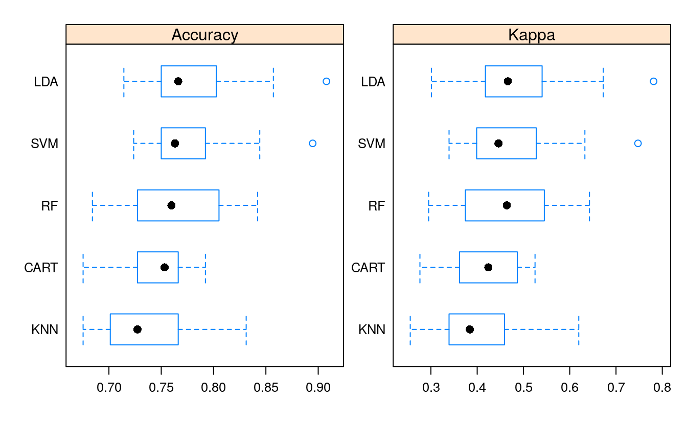
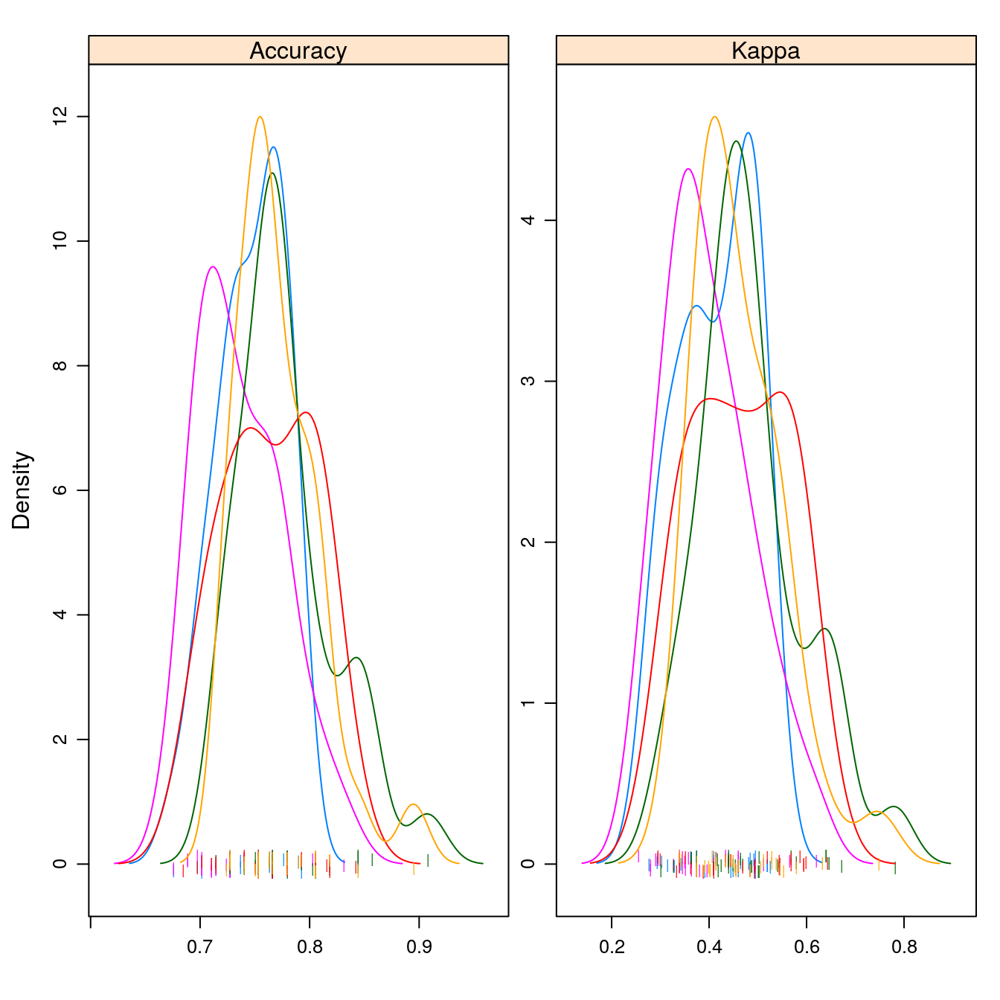
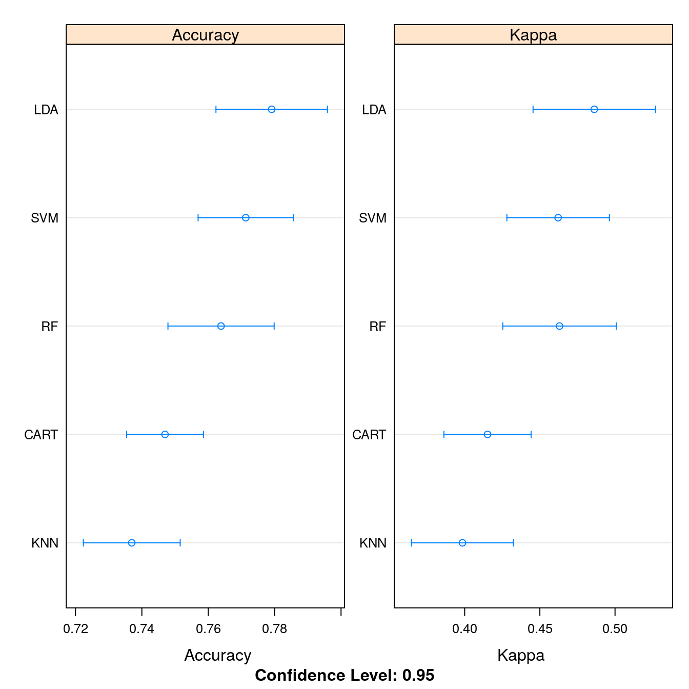
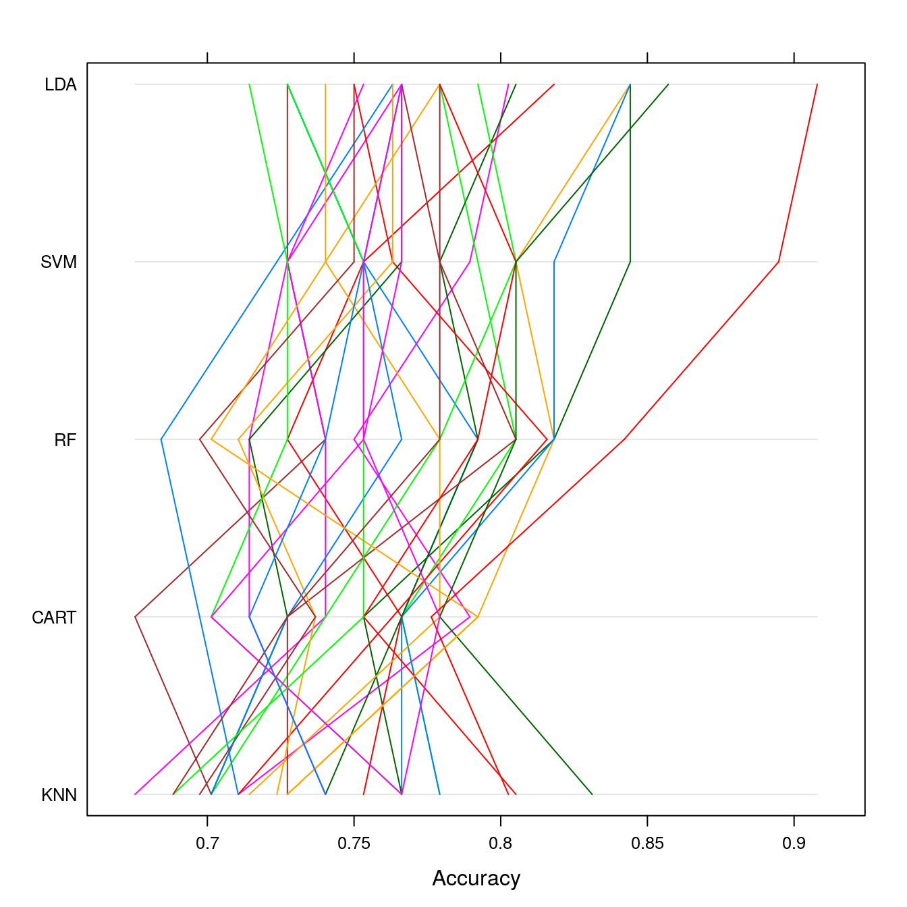
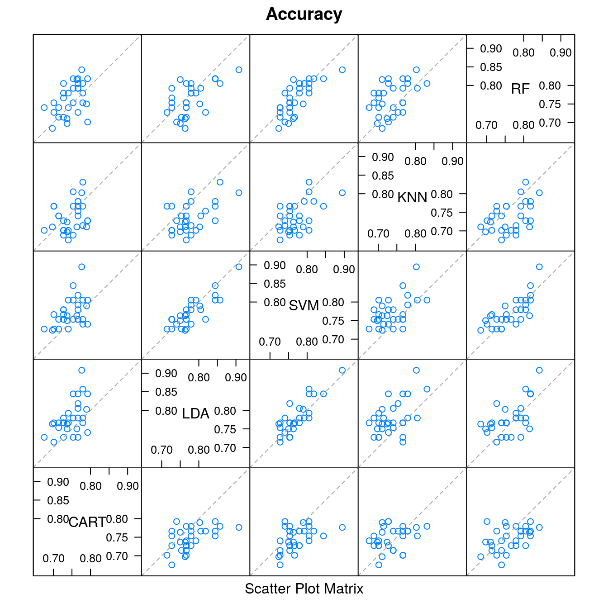
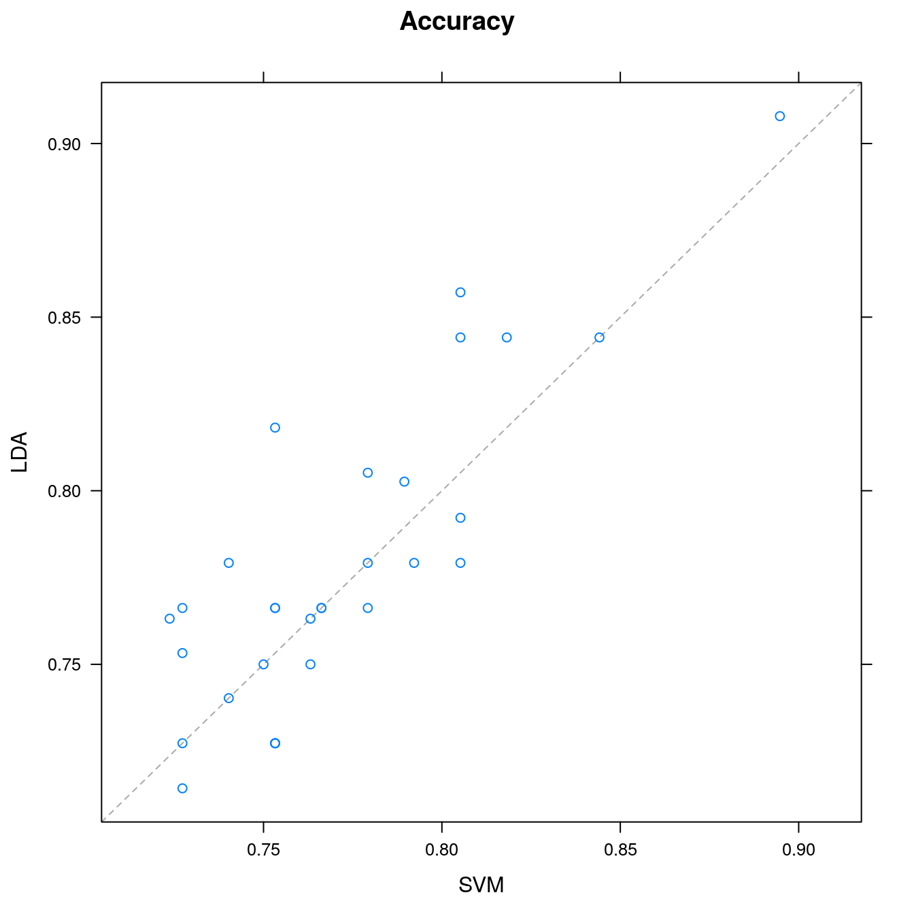

16 Introduction to algorithms for Classification
- Datasets:
PimaIndiansDiabetes
16.3 Workflow
- Load dataset
- Create the train dataset
- Train the models
- Collect resamples
- Plot comparison
- Summarize p-values
dplyr::glimpse(PimaIndiansDiabetes)
#> Rows: 768
#> Columns: 9
#> $ pregnant <dbl> 6, 1, 8, 1, 0, 5, 3, 10, 2, 8, 4, 10, 10, 1, 5, 7, 0, 7, 1, …
#> $ glucose <dbl> 148, 85, 183, 89, 137, 116, 78, 115, 197, 125, 110, 168, 139…
#> $ pressure <dbl> 72, 66, 64, 66, 40, 74, 50, 0, 70, 96, 92, 74, 80, 60, 72, 0…
#> $ triceps <dbl> 35, 29, 0, 23, 35, 0, 32, 0, 45, 0, 0, 0, 0, 23, 19, 0, 47, …
#> $ insulin <dbl> 0, 0, 0, 94, 168, 0, 88, 0, 543, 0, 0, 0, 0, 846, 175, 0, 23…
#> $ mass <dbl> 33.6, 26.6, 23.3, 28.1, 43.1, 25.6, 31.0, 35.3, 30.5, 0.0, 3…
#> $ pedigree <dbl> 0.627, 0.351, 0.672, 0.167, 2.288, 0.201, 0.248, 0.134, 0.15…
#> $ age <dbl> 50, 31, 32, 21, 33, 30, 26, 29, 53, 54, 30, 34, 57, 59, 51, …
#> $ diabetes <fct> pos, neg, pos, neg, pos, neg, pos, neg, pos, pos, neg, pos, …
tibble::as_tibble(PimaIndiansDiabetes)
#> # A tibble: 768 x 9
#> pregnant glucose pressure triceps insulin mass pedigree age diabetes
#> <dbl> <dbl> <dbl> <dbl> <dbl> <dbl> <dbl> <dbl> <fct>
#> 1 6 148 72 35 0 33.6 0.627 50 pos
#> 2 1 85 66 29 0 26.6 0.351 31 neg
#> 3 8 183 64 0 0 23.3 0.672 32 pos
#> 4 1 89 66 23 94 28.1 0.167 21 neg
#> 5 0 137 40 35 168 43.1 2.29 33 pos
#> 6 5 116 74 0 0 25.6 0.201 30 neg
#> # … with 762 more rows16.4 Train the models using cross-validation
# prepare training scheme
trainControl <- trainControl(method = "repeatedcv",
number=10,
repeats=3)
# CART
set.seed(7)
fit.cart <- train(diabetes~., data=PimaIndiansDiabetes,
method = "rpart", trControl=trainControl)
# LDA: Linear Discriminant Analysis
set.seed(7)
fit.lda <- train(diabetes~., data=PimaIndiansDiabetes,
method="lda", trControl=trainControl)
# SVM
set.seed(7)
fit.svm <- train(diabetes~., data=PimaIndiansDiabetes,
method="svmRadial", trControl=trainControl)
# KNN
set.seed(7)
fit.knn <- train(diabetes~., data=PimaIndiansDiabetes,
method="knn", trControl=trainControl)16.5 Compare models
# summarize differences between models
summary(results)
#>
#> Call:
#> summary.resamples(object = results)
#>
#> Models: CART, LDA, SVM, KNN, RF
#> Number of resamples: 30
#>
#> Accuracy
#> Min. 1st Qu. Median Mean 3rd Qu. Max. NA's
#> CART 0.675 0.727 0.753 0.747 0.766 0.792 0
#> LDA 0.714 0.751 0.766 0.779 0.800 0.908 0
#> SVM 0.724 0.751 0.763 0.771 0.792 0.895 0
#> KNN 0.675 0.704 0.727 0.737 0.766 0.831 0
#> RF 0.684 0.731 0.760 0.764 0.802 0.842 0
#>
#> Kappa
#> Min. 1st Qu. Median Mean 3rd Qu. Max. NA's
#> CART 0.276 0.362 0.424 0.415 0.486 0.525 0
#> LDA 0.301 0.419 0.466 0.486 0.531 0.781 0
#> SVM 0.339 0.400 0.446 0.462 0.523 0.748 0
#> KNN 0.255 0.341 0.384 0.398 0.454 0.620 0
#> RF 0.295 0.378 0.464 0.463 0.545 0.643 016.6 Plot comparison
# box and whisker plots to compare models
scales <- list(x=list(relation="free"), y=list(relation="free"))
bwplot(results, scales=scales)
# density plots of accuracy
scales <- list(x=list(relation="free"), y=list(relation="free"))
densityplot(results, scales=scales, pch = "|")
# dot plots of accuracy
scales <- list(x=list(relation="free"), y=list(relation="free"))
dotplot(results, scales=scales)
# parallel plots to compare models
parallelplot(results)
# pairwise scatter plots of predictions to compare models
splom(results)

# difference in model predictions
diffs <- diff(results)
# summarize p-values for pairwise comparisons
summary(diffs)
#>
#> Call:
#> summary.diff.resamples(object = diffs)
#>
#> p-value adjustment: bonferroni
#> Upper diagonal: estimates of the difference
#> Lower diagonal: p-value for H0: difference = 0
#>
#> Accuracy
#> CART LDA SVM KNN RF
#> CART -0.03214 -0.02432 0.01002 -0.01688
#> LDA 0.001186 0.00781 0.04216 0.01525
#> SVM 0.011640 0.915689 0.03434 0.00744
#> KNN 1.000000 6.68e-05 0.000294 -0.02690
#> RF 0.272754 0.449062 1.000000 0.018379
#>
#> Kappa
#> CART LDA SVM KNN RF
#> CART -0.071016 -0.046972 0.016687 -0.047894
#> LDA 0.000809 0.024044 0.087703 0.023122
#> SVM 0.025808 0.356273 0.063659 -0.000922
#> KNN 1.000000 0.000386 0.004082 -0.064581
#> RF 0.021176 1.000000 1.000000 0.015897